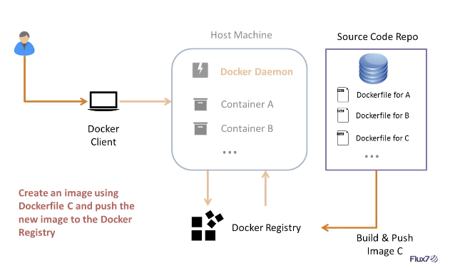

docker的简单使用
docker简介
Flux7 Docker 系列教程（一）：Docker 简介 主要看英文版的好.
层叠的只读文件系统, 联合加载.
Docker 3个组件/3个元素
3个组件是 Docker Client, Docker Daemon, Docker index/Registry.
3个元素是 Docker Container, Docker Image, DockerFile.
他们如何交互呢?

- Docker Client：用户和 Docker 守护进程进行通信的接口，也就是 docker 命令。
- Docker Daemon守护进程：宿主机上用于用户应答用户请求的服务。
- Docker Index：用户进行用户的私有、公有 Docker 容器镜像托管，也就是 Docker 仓库。
- Docker constainer容器：用于运行应用程序的容器，包含操作系统、用户文件和元数据。
- Docker image镜像：只读的 Docker container容器模板，简言之就是系统镜像文件。
- DockerFile：进行镜像创建的指令文件。
在学习 Docker 组件之前，先来看一下 Docker 底层到底是由什么组成的(暂时别看)
- Namespace：隔离技术的第一层，确保 Docker 容器内的进程看不到也影响不到 Docker 外部的进程。
- Control Groups：LXC 技术的关键组件，用于进行运行时的资源限制。
- UnionFS（文件系统）：容器的构件块，创建抽象层，从而实现 Docker 的轻量级和运行快速的特性。
如何运行咯
运行任何应用都必须按照以下两个步骤来: 先有镜像再有容器, container就是一个image的实例instance
- 创建一个image镜像文件
- 运行container容器
1. 创建一个镜像文件
Docker image相当于一个只读的模板文件，保存着运行container所需要的所有的配置、文件；每次启动，都会以基础的 Docker image为模板，按照 Dockerfile 的指令，建立一个新的适用于你自己的 Dokcer image：实际上是在这个基础镜像上建立了一个新的应用层。
自己创建的 Docker image可以推送到 Docker Index 中心，然后提供给他人使用。
2. 运行容器
container被运行后，会在原有的image上创建一个可读写的层，容器设置完毕网络之后便可以运行应用了。
docker本身的启动, 本身就可以看做是一个守护进程 service docker start/stop/restart,在/etc/default/docker配置
查看docker运行没, ps -ed | grep docker 或 status docker
Docker的14个命令,注意区分image和container

docker info: 检查Docker是否安装, 显示Docker信息docker versiondocker images: 检查本机有多少个docker image list, top level的.-a看完整的, 包括中间层images,-q只看iddocker inspect看top level layer的 image详情MD信息,也可以看container, 如 IP,port, 配置信息docker search <imageName>: 在docker index搜索镜像-sstardocker pull <image name>: 下载镜像docker run busybox /bin/echo Hello worrld: 运行container,(-d -p) 是docker create和docker start结合, 创建container并运行containerdocker create:是为指定image添加一个可读写层,构成一个新的container. 从image => container.docker start: 是为container文件系统创建了一个进程隔离空间, 每个容器只有一个. 里面跑不跑进程随意.docker ps: 列出运行中的container, -a是所有不运行的也列出, 就是只看start不看create的咯和docker container ls,docker container ls --alldocker logs <ID/>name>: 查询输出,docker stop <ID/>name>: 停止container,优雅退出,回收进程空间 start和stop可以多个docker kill <ID/>name>直接杀.docker container stop这么写太繁琐ctl+p ctl+q: 将容器后台, 也就是变为守护, attach,exit后ctl+d: 退出容器docker start/restart <ID/>name>: 运行/重启containerdocker attach重新进入-d的守护容器docker exec: 在运行中的container中(有了进程空间的)运行command, 执行进程docker rm <ID/>name>: 删除构成container的可读写层,要先stop.docker rmi <ID/>name>是删top level layer image,docker rmi $(docker images -q): 删了所有层 . 就是docker container rm和docker image rm简写docker commit <ID/>name> <newImageName>: 保存contaner为新image(将可读写层变为只读层, 无论容器运不运行, 注意层的id会变),docker build: 从一个DockerFile中建立image(里面是4步,先FROM获取到image, 然后重复地 1.docker run新建一层读写,然后分配进程空间, 再2.RUM执行命令 RUN其实就会新建一个读写层的 , 3.docker commit保存这层为只读层), 两种方式都可以构建镜像.-t是打tag. 类似git每一个修改都是一个commit, 保存记录.docker history <imageName>: 获取镜像历史(只能是本地)docker push <user>/<repo_name>: 推送镜像.docker login-u -p和docker logout:注意登录id不是邮箱, 然后这个id就算你注册的时候填了大写的, 注册成功后还都是小的, 看一下.(登不上就直接去UI桌面中登录好了)docker help和docker <command> --help: 帮助docker update: 更新contain而配置docker rename重命名container,也可以在docker run的时候指定namedocker top: 列出一个container中的运行的进程.docker pause暂停一个或多个container中的所有进程docker unpause, 保留进程空间docker port: 列出container的端口映射docker tag image username/repository:tag: 给image打tag,保留原始镜像,docker tag SOURCE_IMAGE[:TAG] TARGET_IMAGE[:TAG]就是打一个image名字是username/repositorytag是tag
暂时不看的命令
docker import和docker export:export会把容器打tar,但会移除不必要的MD和image层, 只输出一个层,很好用. 只能看到一个image, save能看到历史镜像docker save和docker load: 使用load从stdin导入一个tar格式的镜像或者仓库，然后用save将tar镜像输出到stdout。save会把一个镜像,只能是镜像,打tar并保留每一层的MD信息. 两个命令就是方便在别的机器上用docker cp: 从container中复制进去文件docker deploy和docker diff: 看container中文件改动docker eventsdocker statsdocker wait
自动化 DockerFile
Docker 提供的 Dockerfile 是一个类似 Makefile 的工具，主要用来自动化构建镜像。既然能自动化创建镜像，那么我们何必去手动创建镜像呢。
格式
Dockerfile 中所有的命令都是以下格式：INSTRUCTION argument
指令(INSTRUCTION)不分大小写，但是推荐大写。
FROM 命令
FROM <imageName>，例如 FROM ubuntu
所有的 Dockerfile 都用该以 FROM 开头，FROM 命令指明 Dockerfile 所创建的image文件以什么镜像为基础，FROM 以后的所有指令都会在 FROM 的基础上进行创建镜像；可以在同一个 Dockerfile 中多次使用 FROM 命令用于创建多个image。
MAINTAINER 命令
MAINTAINER <authorName> 用于指定镜像创建者和联系方式。
例如:
1 | MAINTAINER Victor Coisne victor.coisne@dotcloud.com |
RUN 命令
RUN <command> 用于container内部执行命令。每个 RUN 命令相当于在原有的image基础上添加了一个改动层，原有的镜像不会有变化, 运行完后再提交成只读层. 即类似先docker run再docker commit
ADD 命令
ADD <src> <dst> 用于从将 <src> 文件复制到 <dst> 文件：<src> 是相对被构建的DockerFile的相对路径，可以是文件或目录的路径，也可以是一个远程的文件 url，<dst> 是container中的绝对路径。
COPY 命令
只能讲和Dockerfile文件同目录中的内容复制到container中的指定目录,通常是WORKDIR指定的工作目录,
如: Copy the current directory contents into the container at /app
1 | COPY . /app |
暂时只要这个命令是改动1个层, 不会有Running的那个层
/var/lib/docker/tmp/docker-builderXXXXXXX/… no such file or directory #1922
WORKDIR只是在image内设置路径
1 | docker build -t hello-demo-app . |
which sets the current directory as the context, let’s say you wanted the parent directory as the context, just use:
1 | docker build -t hello-demo-app .. |
CMD 命令
CMD 命令有3种格式：
CMD ["executable","param1","param2"]：推荐使用的 exec 形式。CMD ["param1","param2"]：无可执行程序形式CMD command param1 param2：shell 形式。
CMD 命令用于启动container时默认执行的命令,即docker run时的默认命令, 但如果docker run加了命令, 会覆盖CMD的. 而ENTRYPOINT不会被覆盖, 要覆盖需要docker run --entry加参数
，CMD 命令可以包含可执行文件，也可以不包含可执行文件：不包含可执行文件的情况下就要用 ENTRYPOINT 指定一个，然后 CMD 命令的参数就会作为ENTRYPOINT的参数。
一个
Dockerfile中只能有一个CMD，如果有多个，则最后一个生效。CMD的 shell 形式默认调用/bin/sh -c执行命令。CMD命令会被Docker命令行传入的参数覆盖：docker run busybox /bin/echo Hello Docker会把CMD里的命令覆盖。
ENTRYPOINT 命令
ENTRYPOINT 命令的字面意思是进入点，而功能也恰如其意：他可以让你的container表现得像一个可执行程序一样。
ENTRYPOINT 命令也有2种格式：
ENTRYPOINT ["executable", "param1", "param2"]：推荐使用的 exec 形式ENTRYPOINT command param1 param2：shell 形式
一个 Dockerfile 中只能有一个
ENTRYPOINT，如果有多个，则最后一个生效。
关于 CMD 和 ENTRYPOINT 的联系请看下面的例子
仅仅使用 ENTRYPOINT：
1 | FROM ubuntu |
执行 docker run 306cd7e8408b /etc/fstab 和 docker run 306cd7e8408b 结果并不会有什么差别：
1 | 命令 # docker run 306cd7e8408b /etc/fstab |
但是我们通常使用 ENTRYPOINT 作为container的入口，使用 CMD 给 ENTRYPOINT 增加默认选项：
1 | FROM ubuntu |
然后执行这个constainer：
不加参数便会默认有 -l参数：
1 | 命令 # docker run 89dc7e6d0ac1 |
加了 /etc/fstab 参数便会覆盖原有的 -l 参数：
1 | 命令 # docker run 89dc7e6d0ac1 /etc/fstab |
EXPOSE 命令
EXPOSE <port> [<port>...] 命令用来指定container对外开放的端口。
例如 EXPOSE 80 3306，开放 80 和 3306 端口, 但在docker run的时候还得在host上指定端口的
WORKDIR命令
WORKDIR /path/to/work/dir 配合 RUN，CMD，ENTRYPOINT 命令设置指令执行时的工作目录。
可以设置多次，如果是相对路径，则相对前一个 WORKDIR 命令。默认路径为/。
会分2步变动层
例如：
1 | FROM ubuntu |
docker run ID 得到的结果为：/usr/lib
USER命令
USER <UID/Username> 为container内指定 CMD RUN ENTRYPOINT 命令运行时的用户名或UID。
VLOUME 命令
VOLUME ['/data'] 允许container访问容器的目录、允许container之间互相访问目录。VOLUME 仅仅是允许将某一个目录暴露在外面，更多的操作还需要依赖 Docker 命令实现。
更多的内容可以参考 深入理解 Docker Volume（一）
ENV 命令: Define environment variable
参考 export 的用法咧：ENV LC_ALL en_US.UTF-8
最佳实践
所有应用都会有个最佳的方式，Dockerfile 也不例外，下面是我们总结出的最佳实现方式：
- 把维护者和更新系统的命令依次写在最上方
- 使用标签管理 Dockerfile
- 避免映射公共端口
- 使用类似 array 形式的 CMD 和 ENTRYPOINT
注：映射端口并不属于 Dockerfile 的工作范围。
概念: 10张图带你深入理解Docker容器和镜像
Image Definition
Image 就是一堆只读层（read-only layer）的统一视角

Container Definition
容器（container）的定义和镜像（image）几乎一模一样，也是一堆层的统一视角，唯一区别在于容器的最上面那一层是可读可写的。
container只是在image上增加一层读写层, 并没有提及容器是否在运行.
要点：容器 = 镜像 + 读写层。并且容器的定义并没有提及是否要运行容器。
Running Container Definition
一个运行态容器（running container）被定义为一个可读写的统一文件系统加上隔离的进程空间和包含其中的进程。
正是文件系统隔离技术使得Docker成为了一个前途无量的技术。一个容器中的进程可能会对文件进行修改、删除、创建，这些改变都将作用于可读写层（read-write layer）。
Image Layer Definition
为了将零星的数据整合起来，我们提出了镜像层（image layer）这个概念。下面的这张图描述了一个镜像层，通过图片我们能够发现一个层并不仅仅包含文件系统的改变，它还能包含了其他重要信息。
元数据（metadata）就是关于这个层的额外信息，它不仅能够让Docker获取运行和构建时的信息，还包括父层的层次信息。需要注意，只读层和读写层都包含元数据。
除此之外，每一层都包括了一个指向父层的指针。如果一个层没有这个指针，说明它处于最底层。
区别点
docker run与docker start的区别
docker run 与docker start的区别，为容器命名docker run 只在第一次运行时使用，将镜像放到容器中，以后再次启动这个容器时，只需要使用命令docker start 即可。docker run相当于执行了两步操作：将镜像放入容器中（docker create）,然后将容器启动，使之变成运行时容器（docker start）。
而docker start的作用是，重新启动已存在的镜像。也就是说，如果使用这个命令，我们必须事先知道这个容器的ID或名字，我们可以使用docker ps找到这个容器的信息。
docker run和docker exec的区别
“docker run”VS“docker exec”，这两个命令有区别吗？docker run通常是在新创建的容器中所使用的命令. 它适用于在没有其他容器运行的情况下，您想要创建一个容器，并且要启动它，然后在其上运行一个进程。如果镜像已经在容器中了, 用docker start或docker restartdocker exec适用于在现有容器中运行命令的情况。如果已经拥有了一个正在运行的容器，并希望更改该容器或从中获取某些内容，那么使用docker exec命令就非常合适了。
docker ps和docker images
一个看containers, 一个看imagesdocker ps 命令会列出所有运行中的container。这隐藏了非运行态容器的存在，如果想要找出这些容器，我们需要使用docker ps -adocker images命令会列出了所有顶层（top-level）image。实际上，在这里我们没有办法区分一个镜像和一个只读层，所以我们提出了top-level镜像。只有创建容器时使用的镜像或者是直接pull下来的镜像能被称为顶层（top-level）镜像，并且每一个顶层镜像下面都隐藏了多个镜像层。
registry和repository
registry是docker提供的线上的那个index,包含repository, repository是本地中所有image,类似git的库,github是registry
RUN和CMD
RUN是构建image时, 那一层image执行什么命令,而CMD是构建完image后,成为一个container后的命令
CMD和ENTRYPOINT
CMD命令用于启动container时默认执行的命令,即docker run时的默认命令, 但如果docker run加了命令, 会覆盖CMD的. 而ENTRYPOINT不会被覆盖, 要覆盖需要docker run --entry加参数
- 远程访问
就是docker client和docker deamon不在同一个host上, 平时通过docker命令访问docker client然后docker client会访问deamon. 现在你可以直接通过远程REST API访问docker deamon
- detach和attach区别
ctl+d退出, attach再回到运行的容器中
- run中link和name的区别
—name只是别名, —link是指定链接到那个容器
参考
10张图带你深入理解Docker容器和镜像
Flux7 Docker 系列教程（一）：Docker 简介
Docker 联合文件系统(Union Filesystem)